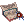
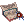
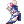
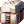

Kagi's PvM Guillotine Cross Guide
Introduction
Why Play Guillotine Cross?
Pros of Guillotine Cross
Cons of Guillotine Cross
Stat Distribution
Stats
Cross Impact Dual Daggers
Eternal Slash/Impact Crater
Counter Slash/Rolling Cutter
Traits
Skills
Leveling
At this stage of the game, this is when you just start off the game, straight out of the tutorial (highly suggest to do it). Here I will guide you step-by-step on where to level and how to progress your gears.
- Novice - (Level 1-9)
- After you finish the tutorial, Mom will lead you to the Job Master NPC, and that is where you job change into a Thief. Otherwise, why are you even here, duh? LOL
- Thief - (Level 9 - 40)
- This part is where it gets tricky, I can't think of a more efficient way to get mercenaries without spending a lot of money in the early game. Sadly, the only workaround I can find is to AFK for 1 hour and wait to claim your dailies in bottom left of @go main from the Dailies NPC, Valerie O'Daley. For the meantime, while waiting for 1 hour to claim your dailies, maybe you can do something else like reading other parts of this guide :)).
- Once you claim your dailies, you will receive two items;
 Gold Coin and  Adept Hunter Contract.
Gold Coin and  Adept Hunter Contract. - After claiming the items, try selling the Gold Coins in #trade in-game (as of 2/18/2022, just sell it for 105k) . Just sell it for as much as you can as the zeny you get from this will be useful later on, for buying consumables.
- As for the Adept Hunter Contract, you will be opening this pack and claiming the Adept Swordsman Scroll. After claiming, you will receive an item called
Adept Swordsman Scroll. Use that item and you will summon a mercenary, this mercenary will be the one fighting for you in the early stage to help you level up.
- Note: You can move the mercenary by holding ALT + Left Mouse Button, additionally, these mercenaries have skills you can use by pressing CTRL + R
- Once you summon the mercenary, head on over to Rockridge by typing @go rock, after warping to Rockridge, walk over to the far right side portal and start hitting the monsters there using your mercenary.
- Don't hit the Coyotes, ignore them, they have high flee and not worth the time to kill.
- Make sure to use
 Hiding to avoid aggro from the monsters.
Hiding to avoid aggro from the monsters.
- Assassin (Level 40-99 and Rebirthing)
- Warp to Eden by typing @go eden then move upwards and look for an NPC called "Lime Evenor", he should have a red exclamation mark on top of his head.
- Talk to him and choose the dialogue Join Eden Group, sign the contract and claim the Physical Eden Set, then wear everything.
- As of now, the chest doesn't give any weapon for Assassin so it's kinda useless for now, but hopefully it gets fixed later on.
- Stay in Rockridge and keep using the mercenary until you hit level 99/70 Assassin Cross.
- Guillotine Cross (Level 99-100)
- Stay in Rockridge until you hit Level 100, once you hit Level 100, you will receive a RoDex (can be opened by pressing CTRL + A.
- Note: If you notice you're "not getting exp" just relog, it's a visual bug.
- Follow his instructions and claim the Advanced Eden Physical Set.
- Wear all of the new stuff.
- It is very important to do the Eden Academy Questline as these gears will help you a lot in leveling/progressing in the early game.
- Stay in Rockridge until you hit Level 100, once you hit Level 100, you will receive a RoDex (can be opened by pressing CTRL + A.
- Guillotine Cross (Level 100-160)
- From here on, you can have a rotation of doing Gramps, and when Gramps is on cooldown, you can do some parts of Eden Academy Questline, or you can farm some zeny in Magma Dungeon 2 (Warper > Dungeons > Magma Dungeon, then move to the top right portal).
- Guillotine Cross (Level 160-200)
- At this point, you should be wearing Grace Eden Gears from doing the Eden Academy Questline.
- Once you hit Level 160, you can start doing some Illusion of Frozen and Illusion of Moonlight Daily Quest Reset
- You can sell the
 Illusion Stones or save them up if you want to make your own gears.
Illusion Stones or save them up if you want to make your own gears.
- You can sell the
- Shadow Cross (Level 200-250)
- You can start leveling up in the 4th job dungeons or joining Thanatos Tower F12 leveling parties (or you can level on your own using
 Rolling Cutter )
Rolling Cutter )
- You can start leveling up in the 4th job dungeons or joining Thanatos Tower F12 leveling parties (or you can level on your own using
Builds and Progression
Leveling and Progressing your gears go hand-in-hand, due to Eden gears being easily accessible, it shouldn't be a problem to level up and farm early game dungeons.
Very Early Game (Levels 45-99)
These gears can be obtained by joining the Eden group.
| Equipment Type | Gear |
|---|---|
| Upper Headgear |  Paradise Cap Paradise Cap
|
| Middle Headgear | N/A |
| Lower Headgear | N/A |
| Armor |  Paradise Suit Paradise Suit
|
| Weapon | N/A (as of now, since it's bugged) |
| Garment |  Paradise Manteau Paradise Manteau
|
| Shoe |  Paradise Boots |
| Right Accessory |  Paradise Gloves Paradise Gloves
|
| Left Accessory |  Paradise Ring Paradise Ring
|
Very Early Game (Levels 100-110)
You can get these gears once you hit Level 100, you will receive a RoDex where and how to get it.
| Equipment Type | Gear |
|---|---|
| Upper Headgear |  Advanced Paradise Luxury Cap Advanced Paradise Luxury Cap
|
| Middle Headgear | N/A |
| Lower Headgear | N/A |
| Armor |  Paradise Luxury Suit Paradise Luxury Suit
|
| Weapon |  Paradise Guillotine Cross Chakram Paradise Guillotine Cross Chakram
|
| Garment |  Advanced Paradise Manteau Advanced Paradise Manteau
|
| Shoe |  Paradise Luxury Boots Paradise Luxury Boots
|
| Right Accessory |  Advanced Paradise Gloves Advanced Paradise Gloves
|
| Left Accessory |  Advanced Paradise Ring Advanced Paradise Ring
|
Very Early Game (Levels 100-125)
From this point, you should have finished the Eden Academy Questline, if not, you should be focusing on that instead of getting more levels.
| Equipment Type | Gear | Card |
|---|---|---|
| Upper Headgear | Advanced Paradise Luxury Cap
|
|
| Middle Headgear | N/A | |
| Lower Headgear | N/A | |
| Armor |  +9 Noblesse Rolling Suit [1] +9 Noblesse Rolling Suit [1]
|
|
| Weapon | Paradise Guillotine Cross Chakram
|
|
| Garment |  +9 Noblesse Attack Manteau [1] +9 Noblesse Attack Manteau [1]
|
|
| Shoe |  +9 Noblesse Attack Boots [1] +9 Noblesse Attack Boots [1]
|
|
| Right Accessory |  Noblesse Attack Ring [1] Noblesse Attack Ring [1]
|
 Revolver Buffalo Bandit Card, if you dropped one from leveling in Rockridge Revolver Buffalo Bandit Card, if you dropped one from leveling in Rockridge
|
| Left Accessory | Advanced Paradise Ring
|
Very Early Game (Levels 150-160)
Upgrade your Noblesse Gears into Imperial Gears by using the  Imperial Modification Cube, can be bought from Irene the Eden Vendor for 2  Paradise Coins
Paradise Coins
- Note: Cards slotted in the gears do not disappear when you upgrade the Eden Academy gears so don't be afraid to put any good card you might drop from leveling up.
| Equipment Type | Gear | Card |
|---|---|---|
| Upper Headgear | Advanced Paradise Luxury Cap
|
|
| Middle Headgear | N/A | |
| Lower Headgear | N/A | |
| Armor |  +9 Imperial Rolling Suit [1] +9 Imperial Rolling Suit [1]
|
|
| Weapon | Paradise Guillotine Cross Chakram
|
|
| Garment |  +9 Imperial Attack Manteau [1] +9 Imperial Attack Manteau [1]
|
|
| Shoe |  +9 Imperial Attack Boots [1] +9 Imperial Attack Boots [1]
|
|
| Right Accessory |  Imperial Attack Ring [1] Imperial Attack Ring [1]
|
Revolver Buffalo Bandit Card, if you dropped one from leveling in Rockridge
|
| Left Accessory | Advanced Paradise Ring
|
Very Early Game (Levels 125-150)
Upgrade your Noblesse Gears into Imperial Gears by using the Imperial Modification Cube, can be bought from Irene the Eden Vendor for 2 Paradise Coins
- Note: Cards slotted in the gears do not disappear when you upgrade the Eden Academy gears so don't be afraid to put any good card you might drop from leveling up.
| Equipment Type | Gear | Card |
|---|---|---|
| Upper Headgear | Advanced Paradise Luxury Cap
|
|
| Middle Headgear | N/A | |
| Lower Headgear | N/A | |
| Armor | +9 Imperial Rolling Suit [1]
|
|
| Weapon | Paradise Guillotine Cross Chakram
|
|
| Garment | +9 Imperial Attack Manteau [1]
|
|
| Shoe | +9 Imperial Attack Boots [1]
|
|
| Right Accessory | Imperial Attack Ring [1]
|
Revolver Buffalo Bandit Card, if you dropped one from leveling in Rockridge
|
| Left Accessory | Advanced Paradise Ring
|